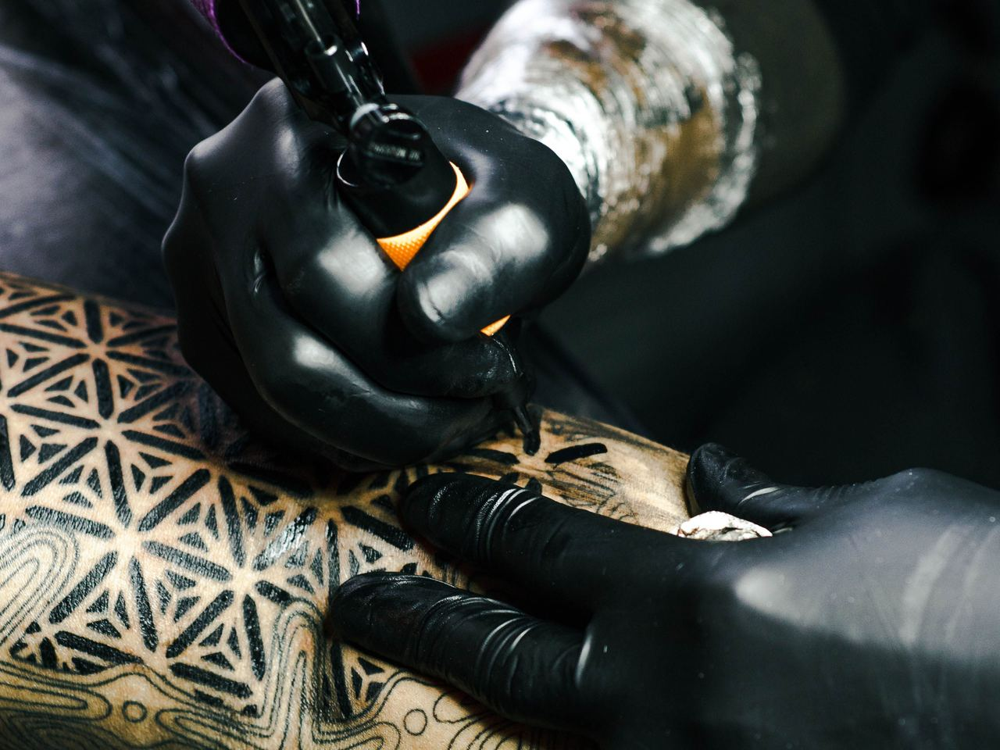

Tattoo studio · Östermalm
Fine line.
Abstract. Custom.
En lugn, ren studio på Valhallavägen 40 med egna och gästande artister.
Boka via mejl★ 4,9 av 5 · 55+ omdömen på Google
Om studion
Lugn studio, tydligt hantverk

På CNCRT40 tar vi oss tid för varje motiv – från första skiss till färdig tatuering, i en ren och avslappnad miljö.
4,9
i betyg på Google – kunderna nämner hygienen, lugnet och resultatet.
Stilar
Vad vi gör
01
Fine line
Tunna, precisa linjer.
02
Abstrakt
Fria former och komposition.
03
Custom
Egen design tillsammans med dig.
04
Gästartister
Artister från andra studios.
Skicka idé, placering och storlek till cncrt40@gmail.com.
Besök
Öppettider
| Måndag – fredag | 10:00 – 18:00 |
| Helger | Enligt bokning |
Valhallavägen 40, 114 22 Stockholm
Östermalm
cncrt40@gmail.com
@concreteforty